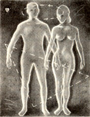
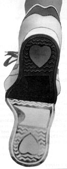

TO YOUR HEALTH
The health risks of yo-yo diets.
When it concerns the fitness of body, mind or spirit, the editors at American Health are there, staying on top of up-to-date research, separating fads from facts, and helping you preserve and improve life's most precious gift your good health. Here are just a few items culled from their current and upcoming issues, one of which concerns the danger of gaining back lost pounds.
Yo-Yo Dieting
We are a nation of "yo-yo" dieters with 31% of American women dieting at least once a month. Yet, Northwestern University researchers report that men who showed the greatest up-and-down weight swings also had the highest risk of sudden death from coronary heart disease. Gaining and relosing weight can also distort the weight-regulation system. The more diets you go on, the harder it is to lose weight, because-when you cut calories-your basal metabolic rate, used for routine maintenance functions like breathing and cell repair (65% to 70% of the body's total energy use), drops measurably within 24 hours and can decline a full 20% within two weeks. This is one reason dieters often reach a plateau some weeks into the diet, finding the same caloric intake no longer produces weight loss. Your body also adapts to dieting by making your body more efficient at fat storage, and this change can persist even if you regain your lost weight.
In addition, people on crash diets or ones low in protein can lose a substantial amount of muscle. Then, if they gain the weight back, they may regain less muscle and more fat. Yo-yo dieting also appears to increase the desire for fatty foods. (In animal experiments at Yale, when given a choice of carbohydrate, protein or fat, rats, after dieting, preferred fat for a period of time.) Weight cycling also tends to shift fat from the thighs or hips to the abdomen, and research has shown that fat above the waist raises the risk of heart disease and diabetes more than fat below the waist.
Which brings us to that age-old question: Is it better to have lost and gained than never to have lost at all? The best approach to this complex issue is to eat a low-fat, highcomplex-carbohydrate diet and get regular aerobic exercise. Permanent weight loss is the goal (who wants to do this again), so select a program that will help change your lifestyle. Even if you've been a yo-yo dieter in the past, don't despair; you can still take control of your weight. It may just require a little more patience and effort this time around-and, most of all, a determination to maintain that hard-earned loss.
How Far, Not How Fast
"Distance is more important than pace," say Dr. Terry Kavanagh, a cardiologist at the Toronto Rehabilitation Center, after comparing the cholesterol profiles of two groups of runners averaging seven- and 10-minute miles and walkers taking 16 minutes to cover a mile. All exercisers lowered overall cholesterol levels equally and improved the proportion of high-density lipoproteins (HDLs, the "good" protective cholesterol), provided they covered the same distance. The most significant changes occurred beyond 12 miles a week, whether walking or running.
A study of long-term relationships found that the longer a couple had been together, the closer their scores of math and vocabulary tests became. But, because of economic factors, husbands influenced their wives' intelligence more than wives influenced their husbands', since a smart wife may not earn enough to improve her husband's lifestyle (hence mind), while intelligent husbands, who are apt to be well-off, often have extensive opportunities for self-improvement. In yet another study of couples' recent and long-ago photos, it was discovered that spouses even grow to look like one another. What's more, the couples who looked most alike were the happiest.
A Bit of Yourself
According to a Gallup poll, only one of five Americans who are aware of organ donation have signed an organ donor card, but all you need are two witnesses and the appropriate form. You can sign on the back of most driver's licenses, or you can get a donor card free from your local Eye Bank or Red Cross or the United Network for Organ Sharing (3001 Hungary Spring Rd., Richmond, VA 23228). Even with a signed card, hospitals will want to obtain family consent before organs can be removed, so tell your loved ones how you feel. For more information on organ donation, or to locate a donor support group in your area, contact the American Council on Transplantation, P.O. Box 1709, Alexandria, VA 22313, 800/ACT-GIVE.
Folks with sensitive skins complain of dryness, itching, burning or eruptions-or all of the above. "The best way to handle skin," says Albert Kligman, University of Pennsylvania dermatology professor, "is to leave it alone. He urges such people to list their skincare products-cleansers, moisturizers and makeup-and why they use each one. If a product or step can be eliminated, Kligman advises to do so.
A Cirrhosis Cure?
In just-released results of a 14-year study, colchicine, a widely available drug used to treat sufferers from gout, actually doubled the survival rate of patients with cirrhosis. What's more, two cirrhosis patients were found to have normal livers after several years of colchicine treatment. Hepatic scar tissue in seven others had reversed to the point that drug therapy was no longer judged necessary by medical experts.
|
|
 |
 |